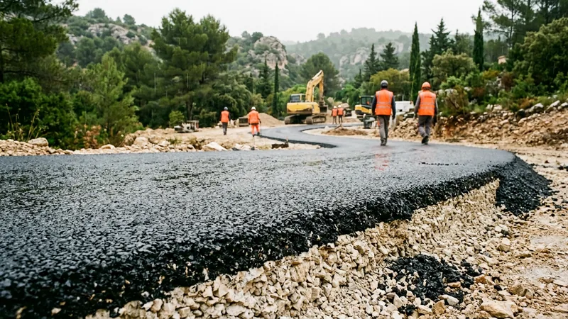

Enrobé drainant : prix au m², pose et limites réelles

L'enrobé drainant — on dit aussi enrobé poreux ou perméable — est un enrobé dont on a retiré une partie des sables pour laisser 20 à 25 % de vides communicants. L'eau le traverse au lieu de ruisseler dessus. Sur le papier, c'est la réponse idéale à l'imperméabilisation des sols ; sur le terrain, il n'est pertinent que dans des situations précises, et il est souvent vendu là où il n'apporte rien.
Ce guide donne les prix 2026 dans les Bouches-du-Rhône, explique ce qui se passe réellement sous le revêtement, et dit franchement dans quels cas un enrobé classique avec une pente correcte fait mieux pour moins cher.
Comment fonctionne un enrobé drainant
Un enrobé classique est étanche : sa courbe granulométrique est continue, les sables remplissent les vides entre les gravillons, et l'eau doit s'évacuer en surface par la pente. Un enrobé drainant utilise une granulométrie discontinue : on supprime les fractions intermédiaires, ce qui laisse un squelette de gravillons en contact, collés par un bitume modifié, avec des vides entre eux.
Point capital, et le plus souvent passé sous silence : le revêtement ne fait que laisser passer l'eau, il ne la stocke pas. Ce qui absorbe l'eau, c'est la couche située en dessous. Un enrobé drainant posé sur une fondation classique compactée ne draine rien du tout : l'eau traverse les 4 centimètres de surface, rencontre la grave compactée, et stagne à l'interface. En hiver, elle gèle et décolle le tapis.
Un enrobé drainant n'a de sens qu'avec une structure réservoir dessous.
La structure réservoir
La structure réservoir est une couche de pierres de gros calibre, non compactée serrée, dont les vides servent de stockage temporaire. Elle se dimensionne à partir de la pluie de référence et de la surface qui s'y déverse.
| Couche | Épaisseur | Rôle |
|---|---|---|
| Enrobé drainant (BBDr 0/6 ou 0/10) | 4 à 6 cm | Laisse passer l'eau, porte le trafic |
| Couche d'accrochage drainante | — | Liaison sans boucher les vides |
| Grave non traitée 20/40 ou 40/70 | 30 à 50 cm | Réservoir : 30 à 35 % de vides |
| Géotextile anticontaminant | — | Empêche les fines du sol de combler le réservoir |
| Sol support | — | Infiltre, ou drain d'évacuation si sol imperméable |
Une couche réservoir de 40 cm avec 32 % de vides stocke environ 128 litres par mètre carré, soit l'équivalent de 128 mm de pluie sur sa propre surface. C'est considérable — à condition que le sol en dessous puisse ensuite absorber ce volume, ou qu'un drain l'évacue.
Le point que les vendeurs passent sous silence : le colmatage
Les vides d'un enrobé drainant se bouchent. Poussières, sables, feuilles, pollens, résidus de pneumatiques : en Provence, entre les pins et le mistral qui charrie des fines, le colmatage est rapide. Sur une allée résidentielle non entretenue, la perméabilité chute sensiblement en trois à cinq ans, et un enrobé drainant colmaté devient un enrobé classique — en moins solide, car son squelette ouvert le rend plus fragile mécaniquement.
L'entretien existe : un passage d'aspiratrice-balayeuse haute pression restaure une bonne part de la perméabilité. Il coûte de l'ordre de 2 à 5 €/m² et doit être répété tous les deux à trois ans. C'est un coût récurrent qu'il faut intégrer à la décision, pas une option.
Prix de l'enrobé drainant en 2026
| Prestation | Prix au m² | Remarque |
|---|---|---|
| Enrobé noir classique | 25 à 60 € | Référence de comparaison |
| Enrobé drainant, couche de surface seule | 40 à 80 € | Sur structure existante adaptée |
| Structure réservoir 40 cm (grave 20/40 + géotextile) | 28 à 48 € | Le vrai coût du drainant |
| Ensemble complet, décapage compris | 75 à 135 € | Allée résidentielle |
| Entretien par aspiratrice (tous les 2-3 ans) | 2 à 5 € | Coût récurrent |
L'ordre de grandeur est donc de deux à trois fois le prix d'un enrobé classique, une fois la structure comptée. Les devis qui annoncent « enrobé drainant à 45 €/m² » ne chiffrent que la couche de surface et supposent que la fondation existante fera l'affaire : dans la quasi-totalité des cas, elle ne le fera pas.
Quand l'enrobé drainant est justifié — et quand il ne l'est pas
Il est pertinent dans quatre situations :
- Le PLU impose un coefficient de pleine terre ou de perméabilité que la parcelle ne peut pas atteindre autrement. C'est le motif le plus fréquent et le plus solide.
- Aucun exutoire n'existe : pas de réseau pluvial, pas de fossé, un terrain plat où l'eau ne peut aller nulle part.
- La surface imperméabilisée est importante et rejetterait un débit dommageable au voisin aval — un point sensible sur les terrains en pente du pays d'Aix.
- Le confort de surface : pas de flaques, pas de projections, moins de ruissellement sur une cour très fréquentée.
Il ne l'est pas quand une pente de 2 % vers une noue, un puisard ou un fossé règle le problème pour une fraction du prix. Sur une allée de 60 m², l'écart entre un enrobé classique bien pentu avec un puits perdu et un ensemble drainant complet dépasse couramment 3 000 €. Il ne l'est pas non plus sous les arbres à feuilles caduques ou sous les pins : le colmatage y est trop rapide pour que l'investissement tienne.
Enfin, un enrobé drainant est déconseillé sur les fortes pentes : au-delà de 5 à 6 %, l'eau circule dans la couche réservoir dans le sens de la pente au lieu de s'infiltrer, et ressort en pied d'ouvrage. Il faut alors cloisonner le réservoir, ce qui complique et renchérit.
Les alternatives perméables, souvent meilleures
| Solution | Prix au m² | Perméabilité | Résiste au colmatage |
|---|---|---|---|
| Gravier stabilisé (nid d'abeille) | 35 à 65 € | Très bonne | Bonne, rechargeable |
| Pavés à joints drainants | 70 à 130 € | Bonne | Bonne, joints regarnissables |
| Dalles alvéolées engazonnées | 40 à 75 € | Excellente | Bonne |
| Enrobé drainant | 75 à 135 € | Bonne au départ | Faible sans entretien |
| Béton drainant | 85 à 145 € | Bonne | Moyenne |
Pour une allée de maison individuelle soumise à une contrainte de perméabilité, le gravier stabilisé offre presque toujours le meilleur rapport efficacité/prix : il se recharge, il ne se colmate pas de la même façon, et il coûte la moitié. L'enrobé drainant garde l'avantage quand il faut une surface lisse, roulante et sans entretien visible — une cour d'entreprise, un parking, un accès très fréquenté.
Réglementation : pourquoi le sujet revient
La gestion des eaux pluviales à la parcelle est devenue une règle courante des PLU. Beaucoup de communes des Bouches-du-Rhône imposent désormais un coefficient de biotope ou de perméabilité, et l'infiltration à la parcelle est demandée dès lors que le réseau public ne peut pas absorber le débit supplémentaire. Le détail de ces obligations et les dispositifs acceptés figurent dans notre guide sur la gestion des eaux pluviales.
Vérifiez le règlement de votre PLU avant de choisir : certaines communes acceptent explicitement le gravier stabilisé comme surface perméable, d'autres exigent un dispositif de stockage dimensionné. La réponse change complètement l'arbitrage économique.
Questions fréquentes
Quel est le prix d'un enrobé drainant au m² ?
Comptez 40 à 80 €/m² pour la seule couche de surface, et 75 à 135 €/m² pour l'ensemble complet avec structure réservoir et décapage, en 2026 dans les Bouches-du-Rhône. Méfiez-vous des devis sous 50 €/m² pour un ouvrage « drainant » : ils ne comptent que le tapis de surface, qui ne draine rien sans la couche réservoir en dessous.
L'enrobé drainant se bouche-t-il ?
Oui, c'est sa principale faiblesse. Poussières, sables et débris végétaux comblent progressivement les vides ; en Provence, sous les pins et avec le mistral, la perte de perméabilité est sensible en trois à cinq ans sans entretien. Un passage d'aspiratrice-balayeuse tous les deux à trois ans, à 2 à 5 €/m², restaure une bonne partie de la capacité d'infiltration. Sans cet entretien, l'ouvrage perd sa raison d'être.
Quelle différence entre enrobé drainant et enrobé poreux ?
Aucune : ce sont deux noms du même produit, un béton bitumineux drainant (BBDr) à granulométrie discontinue. « Perméable » est parfois employé aussi. En revanche, ne confondez pas avec l'enrobé à froid, qui est un produit de réparation ponctuelle et n'a rien de drainant : voyez notre comparatif enrobé à chaud ou à froid.
Peut-on poser un enrobé drainant sur un enrobé existant ?
Techniquement oui, mais l'ouvrage ne drainera pas : l'eau traversera la couche neuve et s'arrêtera sur l'ancien enrobé étanche, où elle circulera latéralement avant de ressortir en rive. En hiver, ce film d'eau piégé décolle le tapis par le gel. Si le support existant est imperméable, il faut le raboter et refaire la structure : voyez notre guide sur le rabotage d'enrobé.
L'enrobé drainant est-il plus fragile ?
Un peu. Son squelette ouvert le rend plus sensible à l'arrachement et au poinçonnement qu'un enrobé fermé : les manœuvres répétées de roues braquées à l'arrêt, les béquilles de remorque et les racines l'attaquent plus vite. Sa durée de vie sur une allée résidentielle est de l'ordre de 12 à 18 ans, contre 20 à 25 ans pour un enrobé classique bien posé.
Le drainant dispense-t-il d'une pente ?
Non, et c'est une erreur fréquente. Même drainant, un revêtement doit conserver 1 à 2 % de pente pour évacuer l'eau excédentaire lors d'un orage qui dépasse la capacité d'infiltration, et pour éviter que la surface ne reste humide. Une surface parfaitement plane se salit plus vite et se colmate plus vite.
Un revêtement perméable à étudier ?
STP Terrassement pose enrobés classiques et revêtements perméables à Aix-en-Provence, Marseille et alentours. Nous vous dirons franchement si le drainant se justifie chez vous : souvent, une bonne pente coûte moins cher.
Pressé ? 07 45 14 20 49 ou WhatsApp